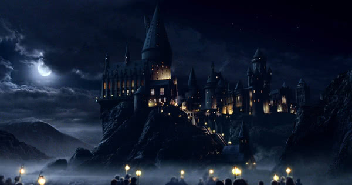
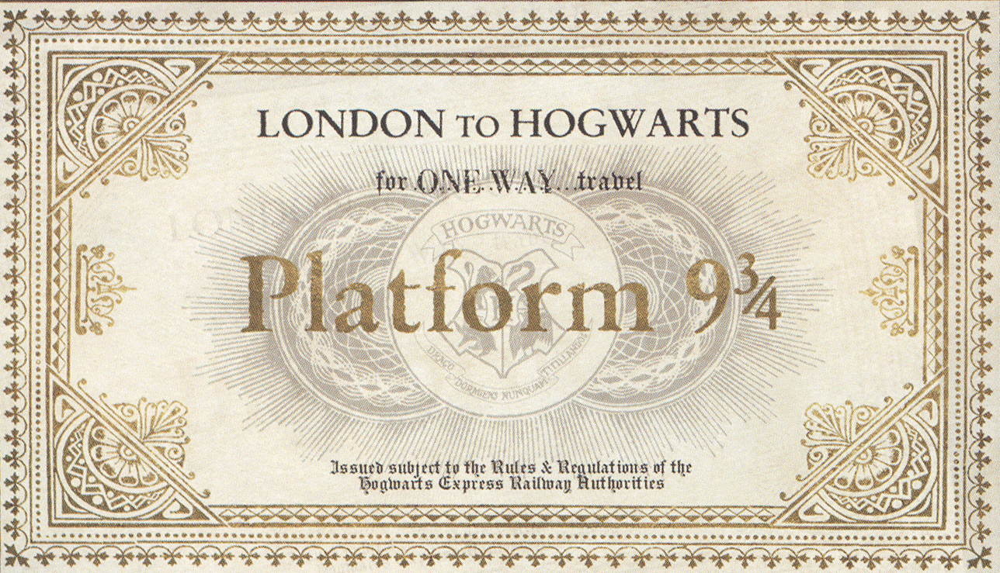

Digamos que depois da terceira grande guerra bruxa, hogwarts passou oir mudanças é claro, desde a aparecncia até a segurança, agora sim podemo afimar que hogwarts é o lugar mais seguro do mundo posso garantir. Então contudo creio que seu carta já tenha chegado e para confimar sua maricula aqui na escola peço que no enviem seus da no link aqui: matricula
Veteranos, para rematricula porfavor dirija-se até a sala salo do diretor com todos documentos em dia.
Todas as atividades extracurriculares os links estarão disponivel em breve.Para ser selecionado a casa ainda está no modo tradicional seguindo o chapéu seletor; caso esteja se pergutando quais casas são: aqui vai uma breve explicação:
Hogwarts é dividida em quatro Casas: Grifinória, Sonserina, Corvinal e Lufa-Lufa. O aluno entra na casa que o chapéu seletor escolher, o mesmo leva em consideração caracteristicas emocionais e intelectuais do determinado bruxo, também poderá ser levado em consideração o desejo do próprio aluno. Os membros da Griffinória são conhecidos por sua coragem e lealdade. Foi fundada pelo famoso bruxo da época, o poderoso Godric Gryffindor Esta é a casa de: Harry Potter, Gina Weasley, Rony Weasley e Hermione, toda a Família Weasley (irmãos de Rony), além de Neville Longbottom e vários outros personagens. A casa Sonserina é conhecida por possuir os membros mais ambiciosos, calculistas e orgulhosos.Foi fundada pelo famoso bruxo Salazar Slytherin, Tem como membros memoráveis:Tom Riddle, Regulus Black, Bellatrix Lestrange e Severo Snape. Também era a casa de Draco Malfoy e até de Lúcio Malfoy Corvinal é a casa daqueles que tem uma grande capacidade intelectual, ou até mesmo os que são focados nos estudos. Foi fundada pelo bruxa Rowena Revenclaw. Tem como membros mais famosos: Luna Lovegood, Cho-Chang e Padma Patil A Casa Lufa-Lufa tem como membros os mais gentis, pacientes e tolerantes alunos. Foi fundada pelo bruxa Helga Hufflepuff. Tem como alunos marcantes: Cedrico Diggory(participou do torneio tribruxo, mas “morreu” na sua primeira aparição nos filmes), Ninfadora Tonks e a professora de Hogwarts Pomona Sprout
